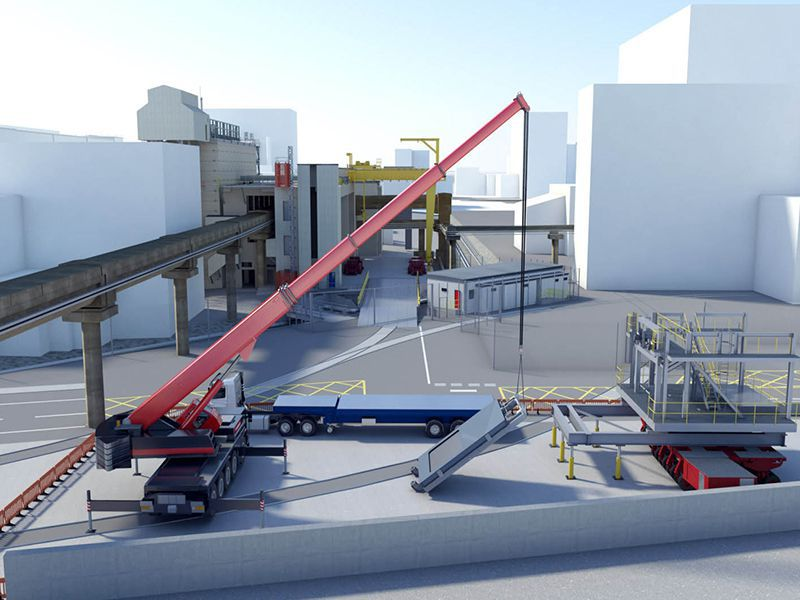

BIM Use: Construction System Design (Virtual Mockup)

Construction Design
A process in which 3D System Design Software is used to design and analyze the construction of a complex building system (e.g., formwork, glazing, tie-backs, curtain walls) in order to increase planning accuracy.
This use often serves as a "Virtual Mockup," replacing or supplementing physical mockups to validate constructability and aesthetics before mass fabrication begins.
- Increase constructability of complex building systems (e.g., complex geometry formwork).
- Increase construction productivity by resolving assembly details digitally.
- Increase safety awareness by visualizing temporary works and potential hazards.
- Decrease language barriers; 3D visualizations are universally understood by diverse workforces.
- 3D System Design Software (e.g., Tekla Structures for steel/concrete, Revit for general assembly).
- Fabrication-level detail libraries.
- Ability to manipulate, navigate, and review 3D models at a high Level of Detail (LOD 400).
- Ability to make appropriate construction decisions using 3D software.
- Deep knowledge of typical and appropriate construction practices for each component.